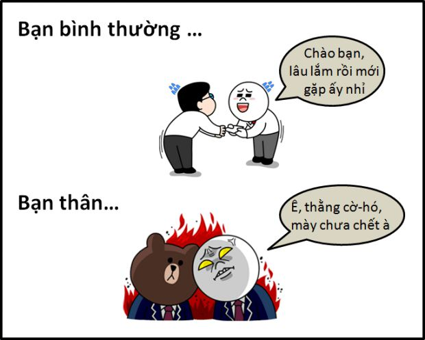
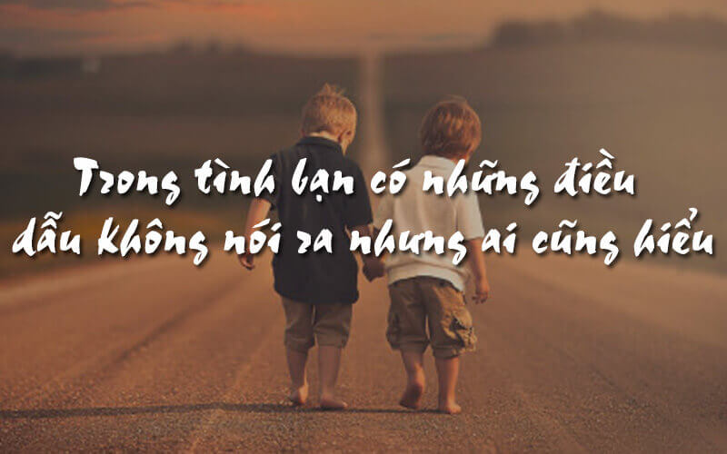
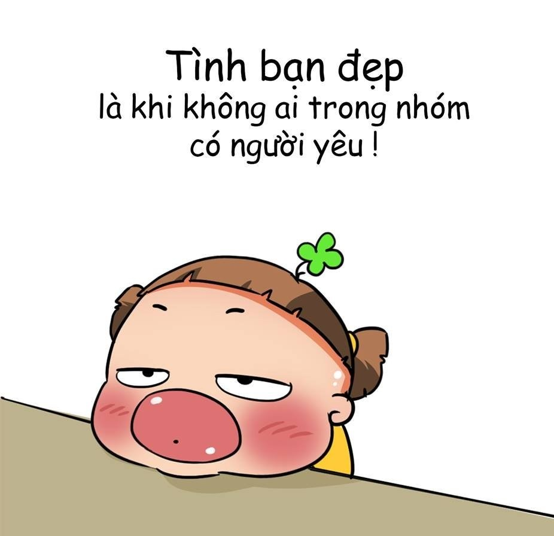
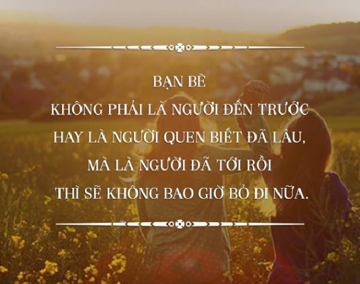
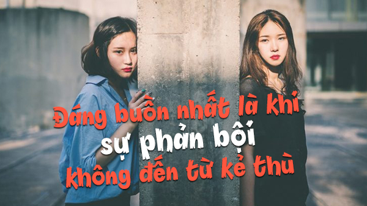
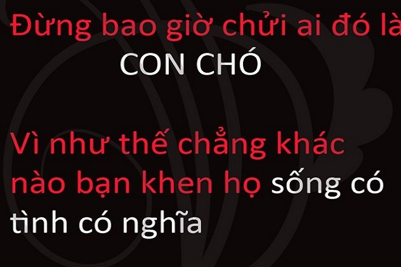
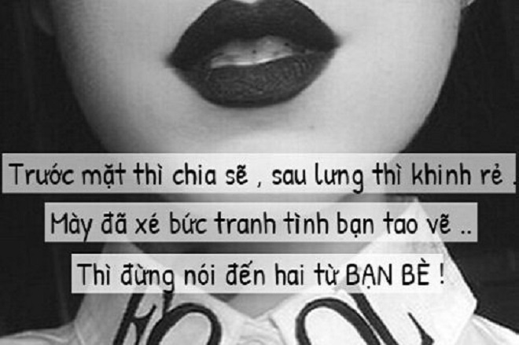
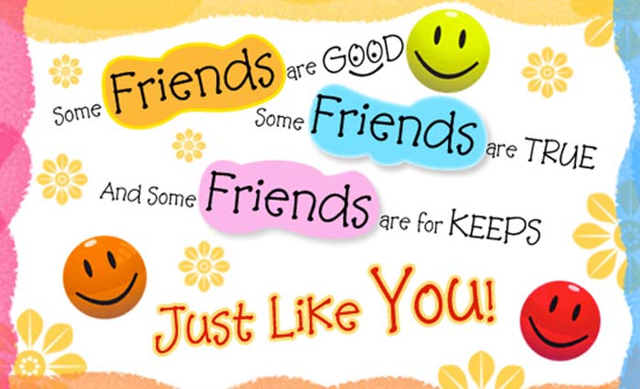

Những câu nói hay về tình bạn: STT, CAP, TUS buồn vui đủ thể loại

Ty Nguyen
CEO ❤️ AhaChat. Love babies & chatbot.
Trong mỗi chúng ta, ai ai cũng có nhiều bạn bè nhưng để tìm được tình bạn tốt, tình bạn chân thành thì không phải ai cũng may mắn có được. Có những người bạn từng rất thân sau đó lại thành kẻ thù không đội trời chung nhưng cũng có những tình bạn gắn bó như keo sơn. Tuyển tập những câu nói hay về tình bạn, những stt, cap, tus buồn vui đủ thể loại về tình bạn dưới đây sẽ giúp bạn tìm được câu nói phù hợp với tâm trạng hiện tại của bạn thân. Cùng đọc và cảm nhận nhé!
Xem thêm:
- 9999+ câu STT hay, CAP - TUS hay bất hủ mọi thời đại được SHARE nhiều nhất
- 999+ STT buồn, CAP tâm trạng, TUS ngắn cực HAY mọi lứa tuổi
- 999+ STT, CAP, TUS thả thính ngắn siêu HAY, ngọt ngào, dễ thương
- Những câu nói hay về tình yêu: STT, CAP, TUS đủ thể loại buồn vui
- 999+ STT vui, CAP hài hước, thả thính vui nhộn về tình yêu, cuộc sống
- 999+ STT hay chất như quả đất, CAP ngầu về tình yêu & cuộc sống
- 9999+ Tên nick Facebook hay, ngầu, đẹp, chất cho Nam & Nữ
- Full 1001+ Icon Facebook 2020 mới nhất & Các biểu biểu tượng FB HOT
Những câu nói hay về tình bạn thân

Cùng tham khảo những câu nói hay về tình bạn thân mà chắc chắn ai cũng đều được cảm nhận trong cuộc đời của mình.
Tình bạn sẽ đến khi ta tôn trọng lẫn nhau. Tình bạn sẽ mất khi ta ích kỉ với nhau
Bất cứ ai cũng có thể làm cho chúng ta cười hoặc khóc, nhưng chỉ có những người “đặc biệt” mới có thể khiến chúng ta cười khi chúng ta đang khóc.
Ai nói rằng trong cuộc sống không hề có những điều kì diệu?Chẳng phải luôn có những người bạn đấy sao?.
Bạn bè là người ta có thể nói chuyện mà không cần dùng đến lời nói.
Một trong những hạnh phúc lớn nhất ở đời này là tình bạn, và một trong những hạnh phúc của tình bạn là có một người để gửi gắm những tâm sự thầm kín.
Tình bạn cũng như triết học, như nghệ thuật… nó không có giá trị để sống sót, nhưng nó lại là một trong những điều tạo ra giá trị cho sự sống.
Một người bạn chân tình là một người bạn luôn ở bên cạnh ta khi cả thế giới bỏ ta ra đi.
Trong bất cứ mối quan hệ nào, nếu bạn nhận thấy mình không được tôn trọng, hãy ra đi cho dù là tình bạn hay tình yêu.
Sự phê bình của người bạn còn tốt hơn lời nịnh nọt của kẻ thù.
Trong cuộc vui ai cũng là bạn , lúc hoạn nạn mới biết bạn là ai …
Có những người bạn, chơi tưởng thân lắm rồi, mà vẫn chưa hiểu nhau được mấy. Chỉ cần liên quan tới tiền bạc, bạn thân cũng dễ thành người dưng. Có người, tưởng yêu thương nhau nhiều lắm, mà chỉ một tin nhắn thôi là đường ai nấy đi. Ngày hôm nay có tiền, ở bên người này. Ngày mai hết tiền, mất việc, ở bên người kia, hoặc chỉ còn lại một mình. Cuộc đời khó lường.
Càng trưởng thành, con người càng lười giải thích. Có khi ai đó hiểu lầm, ta thậm chí muốn để họ tự tìm ra câu trả lời theo thời gian. Ta chỉ cần những người ta thương là đủ, còn lại, tùy! Cuộc sống là để sống, không phải để giải thích.
Tình bạn tự nó đã là mối dây nối với sự thánh thiện. Và sự nghèo khó sẽ làm nó thêm cao trọng.
Mỉm cười thì có bạn, nhăn mặt thì có nếp nhăn.
Hãy kết giao với những người giàu nghị lực và có kỷ luật. Hãy giao du với những người có cao vọng và luôn sống tích cực
Cha mẹ là của cải, anh em là chỗ dựa, bạn thân là cả hai thứ đó.
Hãy chậm rãi trong việc chọn bạn và càng chậm rãi trong việc thay bạn.
Một người bạn trung thành là tuyến phòng thủ mạnh mẽ và người tìm thấy anh ta đã tìm thấy một báu vật.
Bạn hãy tin cậy mọi người, họ sẽ trung thành với bạn. Bạn cao thượng với họ, họ sẽ biểu lộ sự cao thượng với bạn.
Câu hỏi không phải là liệu bạn có sẵn sàng chết vì bạn mình không, mà là bạn có người bạn nào đáng để mình chết không
Hãy đếm tuổi của bạn bằng số bạn bè chứ không phải số năm. Hãy đếm cuộc đời bạn bằng nụ cười chứ không phải bằng nước mắt.
Một ngày cho công việc cực nhọc, một giờ cho thể thao, cả cuộc đời dành cho bạn bè cũng còn quá ngắn ngủi
Hãy nhớ rằng tình bạn là một sự đầu tư khôn ngoan
Khen ngợi tôi, và tôi có thể sẽ không tin bạn.
Nếu không có người bạn tốt thì ta khó mà biết được những sai lầm của bản thân.
Bạn là người ta cảm thấy thoải mái khi ở cùng, ta sẵn lòng trung thành, đem lại cho ta lời chúc phúc và ta cảm thấy biết ơn vì có họ trong đời.
Mất đi một người bạn cũng như mất đi một cánh tay. Thời gian có thể chữa lành nỗi đau nhưng sự thiếu hụt không bao giờ được lấp đầy.
Những người bạn tốt cũng giống như tài khoản trong ngân hàng niềm tin.Bạn càng giữ được lâu thì càng giá trị.
Tình bạn chân chính xoá tan sự ghen tỵ, cũng như tình yêu chân chính đánh chết thói đỏm dáng.
Cách duy nhất để có bạn bè là chính bản thân mình phải là một người bạn.
Một người bạn tốt sẽ nhìn thấy giọt nước mắt đầu tiên, lau đi giọt nước mắt thứ hai và ngăn lại giọt nước mắt thứ ba.
Đàn bà nâng niu tình bạn như thủy tinh mà tình bạn lại bị vỡ tan tành
Một người bạn là người mỉm cười khi bạn cười, vui khi bạn vui, nhưng không khóc khi bạn khóc, vì khi ấy họ còn phải nắm tay và ôm lấy bạn.
Đã có những lúc chúng ta không thể diễn tả được nỗi đau của mình, ngôn ngữ của một người bạn còn có ý nghĩa hơn những gì được nói ra.
Tình bạn nhân đôi niềm vui và chia sẻ nỗi buồn.
Để có bạn bè, đầu tiên bạn phải làm một người bạn đã.
Khi nghĩ về những người bạn đồng hành đã rời ta, chúng ta cảm thấy cô đơn gấp đôi.
Ai cũng lắng nghe điều bạn phải nói. Bạn bè lắng nghe điều bạn nói. Bạn thân lắng nghe điều bạn không nói.
Bạn không bao giờ thực sự phân biệt được bạn và thù cho tới khi mặt băng vỡ.
Những người bạn giống như những ngôi sao. Họ đến rồi đi. Nhưng những người ở lại mới là những người toả sáng.
Bạn là người vươn ra tìm tay ta và chạm đến trái tim ta
Nếu bạn thấy một người bạn không có nụ cười, hãy lấy nụ cười của mình cho người đó.
Thử thách của tình bạn là sự trợ giúp lẫn nhau trong nghịch cảnh và hơn thế, trợ giúp vô điều kiện.
Phần lớn sức sống của tình bạn nằm trong việc tôn trọng sự khác biệt, không chỉ đơn giản là thưởng thức sự tương đồng.
Không ai có thể hạnh phúc mà không có bạn bè, hay chắc chắn về bạn bè mình cho tới khi gặp bất hạnh
Tôi mong ước tình bạn có chân, cũng như có mắt và có tài hùng biện. Nó phải tự đứng được trên mặt đất trước khi bước tới cung trăng.
Những câu nói hay về tình bạn bất hủ

Những câu nói hay về tình bạn bất hủ luôn khiến chúng ta phải suy ngẫm, xem xét lại mối quan hệ bạn bè.
Người ta thường cô đơn bởi vì người ta thường chỉ lo xây tường chứ không lo xây dựng những nhịp cầu.
Hãy đối xử với bạn bè như đối xử với những bức tranh, nghĩa là hãy đặt họ ở những góc độ có nhiều ánh sáng nhất.
Tình yêu thật sự đã hiếm, tình bạn thật sự còn hiếm hơn.
Cách giữ bạn tốt nhất là không bao giờ phản bội bạn.
Hãy chậm rãi trong việc chọn bạn và càng chậm rãi trong việc thay bạn.
Có ba loại bạn có hại: bạn khoác lác, bạn chiều chuộng, bạn xiểm mị. Có ba người bạn có ích: bạn ngay thẳng, bạn khoan dung, bạn hiểu rộng.
Nỗ lực lớn nhất của tình bạn không phải là chỉ thẳng cho bạn thấy khuyết điểm mà là làm cách nào cho bạn thấy được nó.
Một người bạn tốt sẽ nhìn thấy giọt nước mắt đầu tiên, lau đi giọt nước mắt thứ hai và ngăn lại giọt nước mắt thứ ba.
Một người bạn cũng giống như ngôi sao bắc đẩu, bạn sẽ không thể lạc đường khi nhìn vào họ.
Những viên ngọc có thể rất quý giá.Nhưng những người bạn mới là vô giá.
Bạn gặp những người sẽ quên bạn. Bạn sẽ quên những người mình gặp. Nhưng đôi khi bạn gặp những người mình không thể quên. Đó là ‘những người bạn’.
Những người bạn giống như những ngôi sao. Họ đến rồi đi. Nhưng những người ở lại mới là những người tỏa sáng.
Tình bạn nhân lên thêm niềm vui và chia bớt sầu khổ.
Khi giàu rất dễ có bạn, nhưng lúc lận đận thì tìm được bạn là điều không có gì khó khăn cho bằng.
Câu hỏi không phải là liệu bạn có sẵn sàng chết vì bạn mình không, mà là bạn có người bạn nào đáng để mình chết không
Một người bạn là người mỉm cười khi bạn cười,vui khi bạn vui,nhưng không khóc khi bạn khóc,vì khi ấy họ còn phải nắm tay và ôm lấy bạn.
Bạn bè không phải là người đến trước hay là người quen biết đã lâu. Mà là người đã tới rồi sẽ không bao giờ bỏ đi nữa.
Ai không có một người bạn chân chính thì người đó không xứng đáng được sống.
Không phải tất cả những người cười với ta đều là bạn nhưng không phải tất cả những người làm ta bực mình đều là kẻ thù.
Khi ta mất một người bạn trung thành thì không gì có thể hàn gắn sự mất mát của tâm hồn ta.
Thành thật có thể không mang lại nhiều bạn bè nhưng nó luôn mang lại những người bạn đúng nghĩa.
Ai cũng lắng nghe điều bạn phải nói. Bạn bè lắng nghe điều bạn nói. Bạn thân lắng nghe điều bạn không nói.
Có một người bạn thật sự là khi được ở cùng nhau quan trọng hơn so với những gì bạn làm.
Tình bạn có thể vượt qua hầu hết mọi thứ và phát triển trên mảnh đất cằn cỗi; nhưng nó cần thỉnh thoảng bồi phủ một chút với thư từ và các cuộc điện thoại và những món quà nhỏ bé ngớ ngẩn để nó không chết khô.
Tình bạn không phải là một điều lớn lao, nó là tập hợp của hàng triệu điều nhỏ bé.
Một ngày cho công việc cực nhọc, một giờ cho thể thao, cả cuộc đời dành cho bạn bè cũng còn quá ngắn ngủi.
Hãy đếm tuổi của bạn bằng số bạn bè chứ không phải số năm. Hãy đếm cuộc đời bạn bằng nụ cười chứ không phải bằng nước mắt.
STT hay về tình bạn đẹp hài hước

Dưới đây là một số stt hay về tình bạn hài hước, bạn có thể tham khảo và đăng lên mạng xã hội để chia sẻ cho bạn bè cùng biết nhé.
Có tình bạn là có được chiếc chìa khóa mở vào tâm hồn người khác.
Người bạn chân chính cũng giống như sức khoẻ, chỉ đến khi mất rồi mới nhận thấy hết giá trị của niềm hạnh phúc ấy.
Khi bạn buồn hãy gọi cho tôi… tôi không hứa sẽ làm bạn cười… nhưng tôi hứa sẽ cười vào mặt bạn…
Đừng bỏ cuộc! Hãy kết giao với những người giàu nghị lực và có kỷ luật. Hãy giao du với những người có cao vọng và luôn sống tích cực.
Một người bạn biết bài hát trong trái tim tôi và hát lại cho tôi mỗi khi tôi buồn.
Khoa học đã chứng minh những đứa hay chửi bạn là những đứa thật lòng mong muốn điều tốt đẹp nhất dành cho bạn
Những người bạn chân chính chỉ cho ta mọi trở ngại trên đường đời và giúp ta vượt qua. Chớ coi những kẻ nịnh hót là bạn. Người bạn chân chính là người nào trung thực và thẳng thắn.
Bạn bè như shit chả nhẽ ném mẹ vào bồn cầu
Câu nói khiến tình cảm chị em khăng khít: TaoBao
Tình bạn trước hết là sự chân thật, là việc phê bình những sai lầm của bạn. Bạn bè là những người đầu tiên phê bình gay gắt để ta có thể sửa chữa sai lầm.
Khi nghĩ về những người bạn đồng hành đã rời ta, chúng ta cảm thấy cô đơn gấp đôi.
Những người bạn chân chính chỉ cho ta mọi trở ngại trên đường đời và giúp ta vượt qua. Chớ coi những kẻ nịnh hót là bạn. Người bạn chân chính là người nào trung thực và thẳng thắn.
Có một thói quen khó bỏ : gặp bạn thân là khẩu nghiệp
Một kẻ thù không phải là ít, một trăm người bạn chưa phải là nhiều.
Người bạn chân thực luôn luôn là: Khi bạn lầm lỗi, người đó không nghĩ là bạn thường xuyên làm như vậy.
Nỗ lực lớn nhất của tình bạn không phải là chỉ thẳng cho bạn thấy khuyết điểm mà làm cách nào để cho bạn thấy được nó.
Tình bạn là 1 loại tình cảm cao hơn tình yêu. Vì khi yêu mà giận dỗi có thể dẫn đến việc chia tay. Còn những khi bạn thân giận thì chỉ cần trà sữa, bánh ngọt là hết giận ngay:
Ai bỏ bạn bè trong cơn hoạn nạn thì rồi người đó sẽ được biết nỗi đắng cay của cơn hoạn nạn.
Gọi bạn thân là Lợn không phải vì ghét nó mà là để nó biết phấn đấu để giảm cân
Bạn bè là người ta có thể nói chuyện mà không cần dùng đến lời nói.
Tình bạn trước hết là sự chân thật, là việc phê bình những sai lầm của bạn. Bạn bè là những người đầu tiên phê bình gay gắt để ta có thể sửa chữa sai lầm.
Lúc nào người bạn cũng thương ta và trong nghịch cảnh, người bạn trở thành anh em ruột thịt.
Tình bạn ít ồn ào nhất và khiêm nhường nhất là tình bạn hữu ích nhất.
Giàu có là một điều tốt, sức khoẻ là một điều tốt, nhưng điều tốt hơn nữa là được bạn bè yêu thương.
Lúc nào người bạn cũng thương ta và trong nghịch cảnh, người bạn trở thành anh em ruột thịt.
Tình bạn, cũng như tình yêu, bị sự thiếu vắng kéo dài phá hủy, dù nó có thể trở nên mạnh mẽ hơn nhờ những xa cách ngắn tạm thời.
Tình bạn reo vui như tia nắng, quyến rũ như một câu chuyện hay, truyền cảm như một nhà lãnh đạo, keo sơn như một sợi dây chuyền vàng, chỉ lối như một ảo ảnh thiên đường.
Bạn thân khác lớp, cũng không khác yêu xa là mấy đâu.
Một người bạn tâm giao, ấy là người bạn sẵn sàng làm trái ý mình đến trăm lần hòng để làm lợi ích cho mình một lần.
Có ít nhất 1 người bạn để ta chia sẻ những tư tưởng và tình cảm thì tốt hơn là có một lô bạn hời hợt.
Chẳng ai muốn sống khi không có bạn bè bên canh ngay cả khi người đó có những thứ tốt nhất
Người thương hại ta không phải là bạn, người giúp đỡ ta mới là bạn. Ta không lựa chọn được cha mẹ nhưng lựa được bạn thân.
Chiến trường thử thách người dũng cảm, cơn giận thử thách người khôn ngoan, khó khăn thử thách bạn bè.
Hãy mang lại hạnh phúc cho người khác, bạn sẽ hưởng hạnh phúc. Hãy mang lại sự bình an cho người khác bạn sẽ hưởng sự bình an. Mang lại sự đau khổ cho người khác, bạn sẽ nhận lại sự đau khổ.
Những người bạn tốt cũng giống như tài khoản trong ngân hàng niềm tin. Bạn càng giữ được lâu thì càng giá trị.
Chẳng có điều gì trên thế giới khủng khiếp hơn bằng việc hai đứa bạn thân cùng ghét một đứa nào đó
"Yêu xa còn đỡ chứ có đứa bạn thân ở xa buồn thấy mẹ🙂 Muốn có người xàm ngôn tâm sự, trà sữa đi chơi cùng nhau cũng khó"
Chú rể còn chưa có, nhưng đã xác định được phù dâu."
Có một người bạn thật sự là khi được ở cùng nhau quan trọng hơn so với những gì bạn làm
Trong đời người có những giây phút thật gay go. Khi đó sự cô độc là nỗi bất hạnh lớn và ta cần có bạn bè.
Giàu có là một điều tốt, sức khoẻ là một điều tốt, nhưng điều tốt hơn nữa là được bạn bè yêu thương.
Ngoài người bạn tri kỷ, không có thứ thuốc nào chữa được tâm bệnh.
Điều quyến rũ nhất của mọi hạnh phúc là có một tình bạn vững bền và dịu dàng. TÌnh bạn xoa dịu đi mọi lo lắng, xua tan mọi nỗi buồn phiền và khuyên nhủ khi ta bất hạnh.
Một người nghèo vẫn được xem là giàu nếu dưới mái ấm của anh ta có một người bạn tận tụy. Trái lại, người giàu có nhất vẫn chỉ là nghèo, hèn nếu anh ta không có bạn bè để bày tỏ nỗi lòng.
Tao sẽ không bao giờ bán bạn thân cho đến khi được giá tốt
Tình bạn là bầu rượu của cuộc đời: nhưng tình bạn mới… không mạnh cũng không trong.
Người bạn thật sự không phải là kẻ biết nghiêng mình trên đau khổ của chúng ta với lòng thương xót, nhưng chính là kẻ biết nhìn ngắm hạnh phúc của chúng ta mà không ganh tị.
Tình bạn sau tình yêu đôi khi là cái cớ để một người có thể gặp một người, để một người vẫn có thể quan tâm chia sẻ với một người…
Chúng ta luôn có đứa bạn cái gì nó cũng biết, chỉ có biết điều là không
Bạn càng thân càng ít có ảnh chụp chung với nhau, nhưng có thể có rất nhiều ảnh dìm nhau
Muốn giữ cho mọi mối quan hệ bạn bè bền vững, tốt nhất đừng để nó dính đến chuyện tiền bạc.
Nếu không có người bạn tốt thì ta khó mà biết được những sai lầm của bản thân.
Bạn là người mang cả chồng sách mà anh đang tìm và anh có được những quyển sách mà bạn ấy đang giữ.
Tình bạn không cần đến lời nói – Đó chỉ là sự cô đơn thoải mái khiến cho ta không còn cảm thấy buồn phiền vì cô đơn.
"Nhiều khi tao thực sự ghen tỵ với mày😱😯 Bởi vì..... Mày có một người bạn tốt và dễ thương Như Tao"
Bạn là người mang cả chồng sách mà anh đang tìm và anh có được những quyển sách mà bạn ấy đang giữ.
Tình bạn reo vui như tia nắng, quyến rũ như một câu chuyện hay, truyền cảm như một nhà lãnh đạo, keo sơn như một sợi dây chuyền vàng, chỉ lối như một ảo ảnh thiên đường.
Người bạn thân mà anh cố công tìm được trong một năm, anh có thể làm mất trong một giờ.
Để tao chống mắt lên xem👀 thằng nào vô phước hốt phải con bạn thân của tao
Làm bạn bất kể sang, hèn, giàu, nghèo, đàn anh hay đàn em, chỉ lấy tài đức để kết thân với nhau mà thôi.
Muốn tránh thất vọng thì bạn hãy phát triển tình bạn mà không mong đợi sẽ nhận lại được cái gì. Hãy làm cái gì đó cho người khác mà không đòi hỏi họ phải đáp trả lại.
Đừng che giấu tình yêu và sự dịu dàng của mình cho đến khi bạn lìa đời. Hãy làm cuộc đời bạn tràn đầy sự ngọt ngào. Hãy nói những lời nói thân thương khi bạn còn nghe được và khi tim bạn còn rung động.
Bạn thân là đứa luôn đỡ bạn khi ngã nhưng phải đợi sau khi nó cười xong đã
Đừng bao giờ thổ lộ hết với bạn bè vì có ngày họ có thể biến thành thù nên nhân đó sẽ hại anh. Cũng đừng bao giờ đối xử tàn tệ với kẻ thù đến độ họ không thể trở thành bạn anh vào một ngày nào đó.
Không người nào có thể tự nhiên trưởng thành trên đời này và có một cuộc sống hoàn hảo mà không có ít nhất một người hiểu mình.
Điều quyến rũ nhất của mọi hạnh phúc là có một tình bạn vững bền và dịu dàng. TÌnh bạn xoa dịu đi mọi lo lắng, xua tan mọi nỗi buồn phiền và khuyên nhủ khi ta bất hạnh.
Đôi khi, bạn thân của bạn còn ghét người yêu cũ của bạn hơn cả bạn
Một người bạn thật sự quan tâm giống như một người mẹ, mắng mỏ như một người cha, trêu chọc như một người em gái, gây kích thích như một người anh và yêu thương nhiều hơn một người yêu
Tình bạn không cần đến lời nói – Đó chỉ là sự cô đơn thoải mái khiến cho ta không còn cảm thấy buồn phiền vì cô đơn.
Bạn thân chính là, dù thần kinh nó không ổn định, mình vẫn phải chấp nhận ở bên nó :))
Thật tốt hơn cho bạn hữu và cho chính chúng ta, nếu ta bỏ hết các kỳ vọng và ảo tưởng và chấp nhận bạn hữu theo đúng con người của họ.
Bạn bè tốt là khi thấy té thì đỡ chứ không phải đợi lúc mình tắt thở rồi mới thắp nhang.
Ai nói rằng trong cuộc sống không hề có những điều kì diệu? Chẳng phải luôn có những người bạn đấy sao?
Tôi không nhận làm bạn với hai người: một người không bao giờ nói cho tôi biết về anh ta và một người không bao giờ nói về tôi.
Tôi không nhận làm bạn với hai người: một người không bao giờ nói cho tôi biết về anh ta và một người không bao giờ nói về tôi.
Ai bỏ bạn bè trong cơn hoạn nạn thì rồi người đó sẽ được biết nỗi đắng cay của cơn hoạn nạn.
Hãy đối xử với bạn bè như đối xử với những bức tranh, nghĩa là hãy đặt họ ở những góc độ có nhiều ánh sáng nhất.
Chúng ta không thể gọi những con người không hề có cánh là thiên thần,nên thay vào đó,chúng ta gọi họ là những người bạn.
Tôi mong ước tình bạn có chân, cũng như có mắt và có tài hùng biện. Nó phải tự đứng được trên mặt đất trước khi bước tới cung trăng.
Ngôn ngữ của tình bạn thể hiện bằng nghĩa chứ không phải bằng từ ngữ vì thế nó thông thái hơn ngôn ngữ bình thường.
Có những người bạn, sau khi mất liên lạc thì sẽ không còn là bạn, nhưng lại có những người bạn, cho dù năm tháng vô tình thế nào đi nữa, thì tình cảm trước sau vẫn như một.
Tôi không thể thay đổi quá khứ đau thương ảm đạm và cũng không thay đổi được tương lai đang chờ bạn ở phía trước, nhưng tôi sẽ bên bạn khi bạn cần tôi quan tâm.
Bạn mà chơi thân trên 5 năm sẽ không còn là bạn nữa. Mà nó biến thành bà nội luôn rồi
Người yêu không có nhưng nhất định phải có 1 đứa bạn thân cực nhây
Những câu nói hay về tình bạn chân thành

Cha mẹ là của cải, anh em là chỗ dựa, bạn thân là cả hai thứ đó.
Khi bạn hoàn toàn tin tưởng một ai đó, bạn sẽ nhận được một trong hai kết quả: một người bạn thật sự hoặc một bài học để đời đến già.
Nếu 1 ngày bạn thấy tôi thờ ơ lạnh nhạt thì hãy nhớ rằng... tôi đã từng quan tâm đến bạn😊 nhưng bạn đã đánh mất điều đó
Bạn bè sẽ dạy cho chúng ta những điều chúng ta muốn biết. Kẻ thù sẽ dạy cho chúng ta những điều chúng ta cần biết.
“Trong cuộc đời mỗi người, sẽ gặp rất nhiều người. Nhưng trong số đó, chỉ có một số người ở lại, gắn bó với bạn, một số khác chỉ thoáng qua trong kỷ niệm về những năm tháng thanh xuân… Mặc dù vậy, họ vẫn có một chỗ đứng nhất định trong trái tim bạn”.
Nhiều người sẽ bước qua cuộc đời bạn, nhưng chỉ vài người để lại dấu chân trong tim bạn.
Một người sẽ luôn có thể đi qua những thời điểm tối tăm của cuộc sống, nếu họ biết rằng có những người bạn vẫn đang đợi mình ở nơi có ánh sáng.
Những câu nói hay về tình bạn phản bội

"Khi tình bạn hết hạn Thì sự khốn nạn sẽ lên ngôi"
Thà ít bạn mà hoạn nạn có nhau. Còn hơn nhiều bạn mà hoạn nạn thuê bao.
Bạn bè đến rồi đi, người yêu cũng đến rồi đi. Chỉ có những kẻ soi mói và nói xấu bạn là ở lại và ngày một nhiều hơn mà thôi.
Khi thân nhau cũng đừng kể cho nhau nghe những câu chuyện bí mật… Kẻo khi trở mặt thì khai quật những bí mật của nhau.
Không phải ai từng xuất hiện trong cuộc đời bạn cũng hiện diện trong tương lai bạn. Một số người đi ngang qua đời bạn chỉ để dạy bạn những bài học đắng lòng.
Tôi không sợ bị ai đó đâm lén từ phía sau. Tôi chỉ sợ, khi quay lại nhìn người đã đâm mình thì đó lại chính là người bạn mà tôi đã dành cả trái tim để đối đãi.
Hãy cảm ơn những điều tồi tệ nhất của cuộc sống. Nhờ có nó mà bạn có thể nhìn thấy bản chất thật của những kẻ được-gọi-là-bạn mà trước đây bạn đã không nhận ra.
"Bạn bè ít thôi vừa đủ dùng Chứ đừng để cả thùng, Rồi lâm vào đường cùng Phút cuối cùng nó mới đi cúng."
Khi nghĩ về những người bạn thân đã rời bỏ mình, chúng ta cảm thấy cô đơn gấp đôi
Lúc trước đi đâu cũng có nhau, giờ thì chỉ là " lúc trước "
Những câu chửi xéo tình bạn đểu

Khi có tiền thì đâu khó có tiếng cười? Rồi lúc hết tiền mới thấy bạn bè toàn lũ chó nói tiếng người!
"Bạn bè ít thôi vừa đủ dùng Chứ đừng để cả thùng, Rồi lâm vào đường cùng Phút cuối cùng nó mới đi cúng."
Chơi bạn chớ để bạn tàn
Bạn cứ mỗi ngày tập trung vào mỗi một việc thôi đó chính là chịu khó đếm xem có bao nhiêu bộ mặt thật nhé.
Cóc ghẻ mà tưởng là hoàng tử Xi măng mà tưởng là thạch cao Bạn là ai? Thiên thần hay ác quỷ."
Mày tưởng mày là kim cương sao. Không có đâu nha. Mày chỉ là cái hột nhựa gắn lên chiếc nhẫn inox.
Mặt thì mụn mà tưởng là kim cương Tao sống sao cho vừa lòng tụi bây. Coi lại bản thân mình đi nha cô gái. Lanh quá thì thành lanh chanh
Không phải cứ thân nhau là bạn. Ở đời còn rất nhiều đứa khốn nạn gắn nhãn bạn thân.
Chân thì đầy ghẻ mà tưởng là hột xoàn
Còn đến nó trả tiền thì cái mặt nó y như cái bánh bao và kêu mỗi 1 con cút nướng 6 đứa ăn. Bấm đi cho đẹp trời.
Cha mẹ khó nhọc nuôi ta lớn…Bạn bè chơi “xấu” khiến ta khôn.
Tao nói thật tao ngây thơ nhưng tao không ngu ngơ để cả bọn chúng bây cắm sừng tao mỗi ngày.
Mày nổi lên là nhờ thời. Xin lỗi chứ với đời mày chẳng là gì đâu…
Chơi với bạn thì chơi hết lòng. Còn bạn chơi với mình thì chơi hết hồn.
"Lúc giàu sang, tình bạn như tình Hàn. Khi khốn khó thì bạn liền tàng hình."
Thế giới này hàng trăm hàng vạn người sống ảo rồi. Mi đừng cố sống ảo hơn hàng trăm hàng vạn người đó nữa.
Là người thì đúng nghĩa là người Đừng như con tò he thổi te te rồi nát bét."
Không phải là nắng mà cứ thích chói chang. Không phải là gió mà cứ thích lang thang"
Không chơi nữa thì nghĩ, chứ mắc gì mà đi nói xấu sau lưng.
Ủa? mày nghĩ tao giống mày sao. Đừng tưởng bở. Mày chỉ giống được tao ở cái móng chân cái thôi.
Thà tao bấm shift+ delete để mày biến mất luôn còn hơn chỉ là mỗi delete để mày còn xuất hiện trong thùng rác, làm bẩn thùng rác trong máy vi tính của tao. Tìm một người bạn thân không khó Nhưng quan trọng là chó hay người.
Bạn bè giàu có thì thấy nó Lúc khốn khó thì nó trốn mất tăm."
Hiền quá thì kêu ngu
Nước trong thì không có cá
Người khôn chửi khéo nửa câu Để cho người dại tưởng đâu khen mình. Người dại ăn uống nhiệt tình Người khôn rượu uống nửa bình là ngưng."
Đứa nào nói xấu tát vào mồm ngay.
Lúc ăn uống có người bao thì nó ngoác mồm ra táp
Đừng bao giờ lừa dối người khác. Bởi vì những người mà bạn lừa được đều là những người tin tưởng bạn
Đời là bể khổ. Lúc tao khổ mới biết được lòng mày.
Đừng bao giờ quan tâm đến những người nói xấu sau lưng bạn. Bởi vì vị trí của họ là ở đó … mãi mãi sau lưng bạn mà thôi.
Khốn khổ cho mấy đứa cứ tưởng mình nổi tiếng trong khi đó chả có ai biết đến nó là đứa nào.
CAP chửi xéo bạn xấu cực thâm

Tao đốt thêm điếu nữa tựa lưng vào ghế rồi phê pha… Thả lỏng cơ thể đến lúc tao đẩy mọi thứ xê ra… Củng dễ hiểu thôi …mỗi ng một kiểu.. nên đừng vội phê phán… Đến lúc mà tao bực tức đồng nghĩa với việc căn phòng lại lê lán.."
Không phải tất cả những người cười với ta đều là bạn. Cũng không phải tất cả những người làm ta bực mình đều là kẻ thù.
Không phải cứ thân nhau là bạn. Ở đời còn rất nhiều đứa khốn nạn gắn nhãn bạn thân.
Cha mẹ khó nhọc nuôi ta lớn. Bạn đểu khiến ta khôn.
Giá trị của đồng tiền nằm ở cách tiêu. Giá trị của con người nằm ở cách yêu và cách sống.
Đừng bao giờ quan tâm đến những người nói xấu sau lưng bạn. Bởi vì vị trí của họ là ở đó … mãi mãi sau lưng bạn mà thôi.
“Gia đình mày cũng hất, bạn tốt mày cũng lật. Đừng nghĩ vậy là chất, thay đổi đi súc vật"
Thời gian là liều thuốc kì diệu, nó sẽ biến nỗi buồn thành bài học.
Chơi với bạn hết lòng – Bạn chơi lại hết hồng. Người xấu thì nhiều – Người biết điều thì ít.
“Dám nói xấu thì đứng trước mặt tao mà nói. Tao còn nể. Nói xấu sau lưng, xin lỗi tao không quan tâm. Không đủ bản lĩnh để tao chấp."
“Tiếc cho cái mặt xinh mà trí thông minh thì đéo có. Nhân cách lại méo mó, bạn thích làm chó thế sao?"
Ừ, tao láo: Nhưng tao biết điều Còn hơn những đứa nói nhiều Mà không biết nhục.
“Cuộc sống này người thật lòng thì ít mà chó bám đít thì quá nhiều :[[ Đôi khi ngẫm lại..tự mình bật cười :)) Bởi vì.. Ngay cả đồng tiền còn có hai mặt huống chi là nhân cách con người! : ))"
Trong các thể loại buôn bán … Thì bán đứng bạn bè là thứ kinh tởm nhất!
“Tao có thể thuê người đập Chó Chứ không để cho Chó có cơ hội cắn được tao, mày là 1 VD"
Tiếng xấu tao vang danh , nhưng toàn tụi mày đồn đại. Bạn là loa phát thanh nhanh, gom bầy chó sủa dồn lại."
Tìm một người bạn thân không khó. Nhưng quan trọng là chó hay người.
Những câu nói bằng tiếng Anh hay về tình bạn

Những câu nói bằng tiếng Anh hay về tình bạn sẽ giúp bạn gửi gắm đến những người bạn của mình những tình cảm, sự biết ơn mà khi dùng ngôn ngữ Việt của mình khó có thể diễn tả được hết.
"1. Don’t be dismayed at goodbyes, a farewell is necessary before you can meet again and meeting again, after moments or lifetimes, is certain for those who are friends. – Richard Bach
Đừng âu sầu khi nói lời tạm biệt, lời tạm biệt là cần thiết trước khi ta có thể gặp lại nhau, và gặp lại nhau, cho dù sau khoảng thời gian ngắn ngủi hay sau cả một đời, là điều chắc chắn sẽ xảy ra với những người bạn hữu."
"2. Don’t walk behind me; I may not lead. Don’t walk in front of me; I may not follow. Just walk beside me and be my friend.
Đừng đi theo sau tôi, tôi không phải người dẫn đường. Đừng đi trước tôi, tôi không thể đi theo. Chỉ cần bên cạnh tôi và là bạn của tôi."
"3. A friend is someone who gives you total freedom to be yourself.
Bạn bè là người mang đến cho bạn sự tự do thể hiện chính mình."
"4. A friendship can weather most things and thrive in thin soil; but it needs a little mulch of letters and phone calls and small, silly presents every so often – just to save it from drying out completely. – Pam Brown
Tình bạn có thể vượt qua hầu hết mọi thứ và phát triển trên mảnh đất cằn cỗi; nhưng nó cần thỉnh thoảng bồi phủ một chút với thư từ và các cuộc điện thoại và những món quà nhỏ bé ngớ ngẩn để nó không chết khô."
"5. Happy is the home that shelters a friend! It might well be built, like a festal bower or arch to entertain him a single day.
Hạnh phúc thay cho mái nhà nào che chở một người bạn. Nếu được thì cũng đáng xây nên một lâu đài tráng lệ để tiếp đón bạn dù chỉ trong một ngày."
"6. Many people will walk in and out of your life, but only few will leave footprints in your heart.
Rất nhiều người bước qua cuộc đời bạn, nhưng chỉ vài người để lại dấu ấn trong tim bạn mà thôi."
"7. Two persons cannot long be friends if they cannot forgive each other’s little failings.
Hai người không thể trở thành bạn lâu dài nếu như họ không thể tha thứ cho những thiếu sót nhỏ của nhau."
"8. Friendship is a horizon, which expands whenever we approach it.
Tình bạn một chân trời mà mở rộng bất cứ khi nào chúng ta tiếp cận nó."
"9. In my friend, I find a second self.
Trong bạn, tôi tìm thấy một nửa của mình."
"10. You never really know your friends from your enemies until the ice breaks.
Bạn không bao giờ thực sự biết được bạn và thù cho đến khi mặt băng vỡ."
"11. No man is whole of himself, his friends are the rest of him. – Harry Emerson Fosdick
Không ai toàn diện được, bạn bè là phần mà ta còn thiếu. Giống như luật bù trừ vậy đó, tình bạn là cùng sẻ chia và cùng nhau tiến bước mà."
"12. A true friend is someone who reaches for your hand and touches your heart.
Người bạn tốt nhất là người ở bên bạn khi bạn buồn cũng như lúc bạn vui."
"13. There is nothing on this earth more to be prized than true friendship.
Không có gì trên trái đất đủ để lớn hơn tình bạn thật sự."
"14. There are no such things as strangers, only friends that we have not yet met.
Không có thứ gì gọi là ‘người lạ’, chỉ có bạn bè mà ta chưa gặp mà thôi.)"
"15. Walking with a friend in the dark is better than walking alone in the light.
Đi cùng một người bạn trong lúc tăm tối còn hơn là đi một mình giữa trời quang mây tạnh."
"16. No man or woman is worth your tears, and the one who is, won’t make you cry.
Không có ai xứng đáng với những giọt nước mắt của bạn, người xứng đáng với chúng thì chắc chắn không để bạn phải khóc."
"17. Best friends make the bad times good and the good times unforgettable.
Bạn tốt sẽ biến những khoảnh khắc tồi tệ thành khoảnh khắc ý nghĩa và khiến những khoảnh khắc ý nghĩa trở nên khó quên."
"18. Best friends are the people in your life that make you laugh louder, smile brighter and live better.
Những người bạn tốt nhất trong cuộc đời là những người khiến chúng ta cười lớn hơn, cười tươi hơn và sống tốt hơn."
"19. Remember that the most valuable antiques are dear old friends.
Hãy nhớ rằng cổ vật có giá trị nhất chính là những người bạn tri kỷ."
"20. Friends are people you can talk to without words when you have to.
Bạn bè là những người mà khi cần ta có thể nói chuyện với họ không phải dùng đến lời nói."
"21. A good laugh is sunshine in a house.
Có thêm tiếng cười vui vẻ như có thêm ánh nắng trong nhà."
"22. Who finds a faithful friend, finds a treasure.
Nếu bạn tìm được 1 người bạn trung thành, bạn đã tìm được 1 kho báu."
"23. If you never had friends, you never lived life.
Nếu không có bạn bè thì bạn chưa bao giờ là thực sự sống trên cuộc đời này."
"24. True friend is someone who reaches for your hand and touches your heart.
Người bạn tốt nhất là người ở bên bạn khi bạn buồn cũng như lúc bạn vui."
"25. Friends show their love in times of trouble, not in happiness.
Tình cảm bạn bè thể hiện trong những lúc gặp khó khăn chứ không phải những khi hạnh phúc."
"26. A sweet friendship refreshes the soul.
Một tình bạn ngọt ngào tưới mát cho tâm hồn."
"27. To like and dislike the same things, that is indeed true friendship.
Tình bạn thật sự là khi ta cùng yêu và ghét một thứ gì đó."
"28. True friendship continues to grow even over the longest distance. Same goes for true love.
Tình bạn đích thực vẫn tiếp tục phát triển, dù nghìn trùng xa cách. Tình yêu thật sự cũng thế."
"29. Much of the vitality in a friendship lies in the honouring of differences, not simply in the enjoyment of similarities.
Phần lớn sức sống của tình bạn nằm trong việc tôn trọng sự khác biệt, không chỉ đơn giản là thưởng thức sự tương đồng."
"30. If you cannot lift the load off another’s back, do not walk away. Try to lighten it. – Frank Tyger
Nếu bạn không thể nâng gánh nặng lên khỏi lưng người khác, đừng rời khỏi. Hãy cố gắng làm nhẹ nó."
"31. I had three chairs in my house; one for solitude, two for friendship, three for society. – Henry David Thoreau
Tôi có ba chiếc ghế trong nhà mình; cái thứ nhất cho sự cô độc, cái thứ hai cho tình bạn, cái thứ ba cho xã hội."
"32. Friendship starts with a smile, grows with talking and hang around, ends with a death.
Tình bạn bắt đầu bằng nụ cười, tiến triển bằng những lần tâm sự và dạo chơi, kết thúc khi chúng ta không còn sống."
"33. If all my friends jumped off a bridge, I wouldn’t follow, I’d be the one at the bottom to catch them when they fall.
Nếu tất cả bạn bè tôi nhảy khỏi cây cầu, tôi sẽ không theo đâu, tôi sẽ là người ở bên dưới để đón họ khi họ rơi xuống."
"34. Count your age by friends, not years Count your life by smiles, not tears. – John Lennon
Hãy đếm tuổi của bạn bằng số bạn bè chứ không phải số năm. Hãy đếm cuộc đời bạn bằng nụ cười chứ không phải bằng nước mắt."
"35. A friend is a hand that is always holding yours, no matter how close or far apart you may be. A friend is someone who is always there and will always, always care. A friend is a feeling of forever in the heart.
Bạn là người luôn nắm tay ta, cho dù ta ở cách xa đến thế nào. Bạn là người luôn ở đó, và luôn luôn, sẽ luôn luôn quan tâm. Bạn chính là cảm giác vĩnh hằng ở trong tim."
"36. It’s really amazing when two stranges become the best of friends, but it’s really sad when the best of friends become two strangers.
Thật tuyệt diệu khi hai người lạ trở thành bạn tốt của nhau, nhưng thật buồn khi hai người bạn tốt trở thành hai người lạ."
"37. The greatest gift of life is friendship, and I have received it.
Món quà tuyệt vời nhất của cuộc sống là tình bạn, và tôi đã nhận được nó."
"38. It is one of the blessings of old friends that you can afford to be stupid with them. – Ralph Waldo Emerson
Điều tuyệt vời của những người bạn cũ là bạn không ngại làm những điều ngớ ngẩn khi ở bên cạnh họ."
"39. You should always leave loved ones with loving words. It may be the last time you see them.
Hãy luôn để lại những lời chân tình với những người bạn yêu thương vì đó có thể là lần cuối cùng bạn được gặp thấy họ."
"40. Good friends help you to find important things when you have lost them… your smile, your hope, and your courage.
Tình bạn tốt giúp bạn tìm thấy những điều quan trọng khi bạn lạc mất chúng… nụ cười, hy vọng và dũng khí của bạn."
"41. Friendship… is not something you learn in school. But if you haven’t learned the meaning of friendship, you really haven’t learned anything.
Tình bạn … không phải là cái gì đó bạn học được ở trường học. Thế nhưng nếu bạn không biết được ý nghĩa của nó thì thực sự bạn không học được gì cả."
"42. True friends are the ones who have nice things to say about you behind your back.
Một người bạn thực sự luôn nói những lời tốt đẹp về bạn sau lưng bạn."
"43. We are all angles with one wing, and we must embrace each other to learn to fly.
Chúng ta đều là thiên thần chỉ có một chiếc cánh, và ta phải ôm lấy lẫn nhau để học bay."
"44. Your friendship is a gift I enjoy opening everyday.
Tình bạn là 1 món quá, mà bạn mở nó mỗi ngày."
"45. The test of friendship is assistance in adversity, and that too unconditional assistance.
Thử thách của tình bạn là sự giúp đỡ nhau trong lúc khó khăn, và hơn thế nữa đó là sự giúp đỡ vô điều kiện."
"46. Friendship is a single soul living in two bodies.
Tình bạn nghĩa là một tâm hồn trong hai cơ thể."
"47. Friendship may, and often does grow into love, but love never subsides into friendship.
Tình bạn có thể và thường phát triển thành tình yêu, nhưng tình yêu thì thì không thể lắng xuống thành tình bạn."
"48. All the wealth of the world could not buy you a friend, nor pay you for the loss of one.
Tất cả của cải trên thế gian này không mua nổi một người bạn cũng như không thể trả lại cho bạn những gì đã mất."
"49. Be slow in choosing a friend but slower in changing him.
Hãy từ từ chọn bạn, khi thay đổi bạn cũng phải từ từ hơn. Vì bạn bè thì dễ dàng tìm kiếm nhưng để có được người bạn thực sự bên cạnh mình cũng không đơn giản phải không nào?"
Bài viết trên đây đã tổng hợp những câu nói hay về tình bạn thân, tình bạn phản bội, tình bạn đểu và cả những câu nói hay về tình bạn bằng tiếng anh nữa. Hy vọng qua bài viết, bạn đã chọn lựa được những câu nói muốn dành tặng đến những người bạn yêu quý của mình hay những người bạn đã phản bội bạn. Nhớ lưu lại bài viết này để sử dụng khi cần bạn nha. Chúc bạn luôn có những người bạn tốt và cả một tình bạn đẹp.